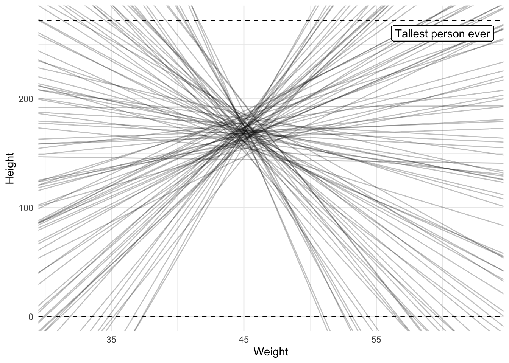
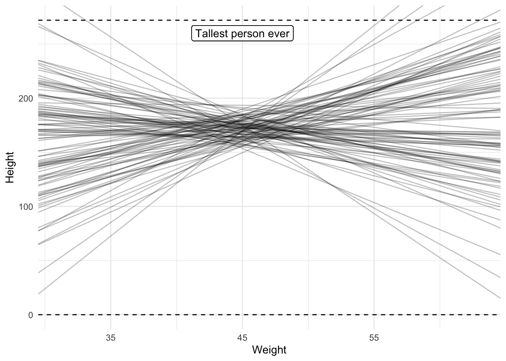
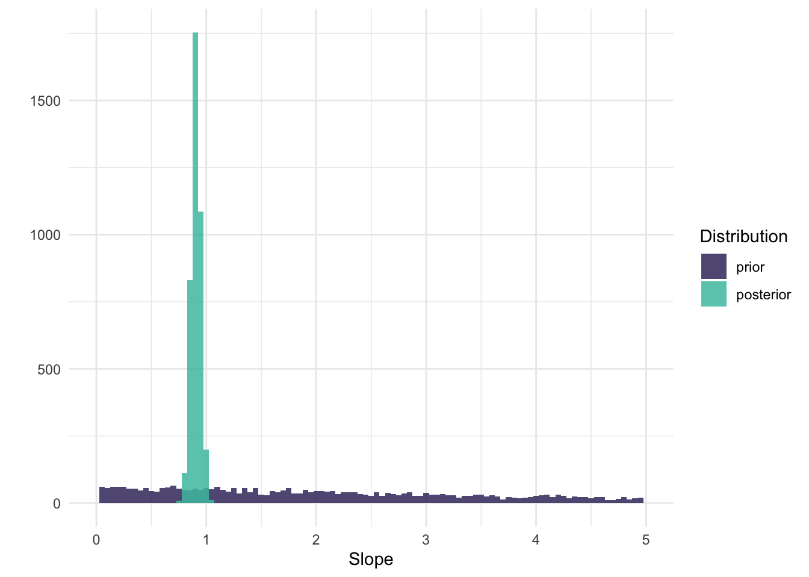
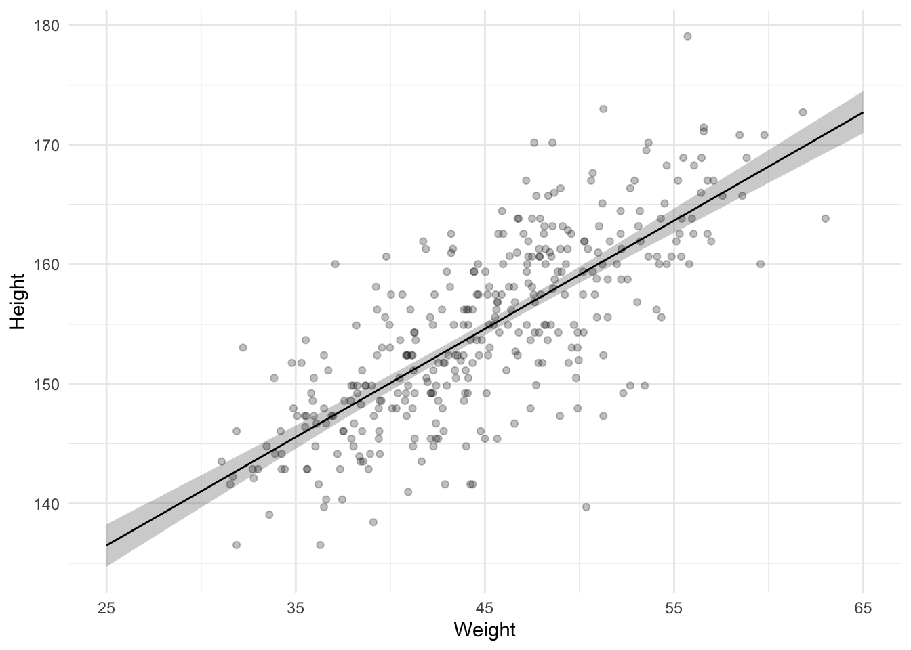
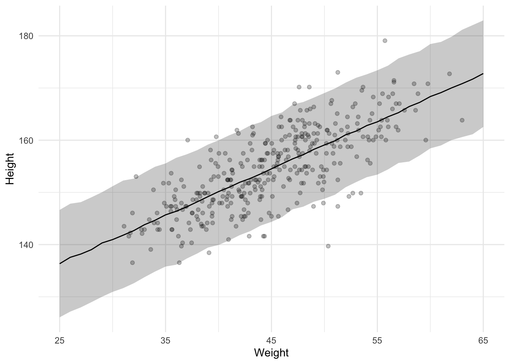

Code
# Load packages
library(tidyverse)
library(viridis)
library(brms)
library(tidybayes)
# Load data
data <- read_csv("Howell1.csv")
# Set seed
set.seed(4)
# Set options
theme_set(theme_minimal())This post is a work in progress. I already put it up to receive some feedback, so expect changes to the content of this post.
This post is about figuring out how Bayesian statistics works and about developing a workflow to conduct Bayesian analyses using the brms package. Specifically, I want to go through the process of running a Bayesian analysis and visualizing the different steps of that analysis in order to make sure I know what I’m doing.
If you want to follow a long, run the following setup code.
# Load packages
library(tidyverse)
library(viridis)
library(brms)
library(tidybayes)
# Load data
data <- read_csv("Howell1.csv")
# Set seed
set.seed(4)
# Set options
theme_set(theme_minimal())The data we will use to play with is the same data Richard McElreath uses in Chapter 4 of his amazing book called Statistical Rethinking. The data consists of partial census data of the !Kung San, compiled from interviews conducted by Nancy Howell in the late 1960s. Just like in the book, we will focus only on people 18 years or older, so in the code below we create a subset of the data and store the result back into the same data frame called data.
# Only select people older than 18
data <- filter(data, age >= 18)
# Show the first rows
head(data)| height | weight | age | male |
|---|---|---|---|
| 151.765 | 47.82561 | 63 | 1 |
| 139.700 | 36.48581 | 63 | 0 |
| 136.525 | 31.86484 | 65 | 0 |
| 156.845 | 53.04191 | 41 | 1 |
| 145.415 | 41.27687 | 51 | 0 |
| 163.830 | 62.99259 | 35 | 1 |
The general idea behind Bayesian statistics is that you start with some prior beliefs about the parameters of interest and then update those beliefs with the data. Note that this doesn’t mean that you have to personally accept those beliefs. You could simply postulate a belief to serve a particular purpose, such as assuming that a null effect is most likely even though you personally believe that there should be an effect. It does mean that we should start with defining some beliefs, rather than immediately jumping into running an analysis.
Let’s focus our first question on the heights in the data. What are the heights of the Dobe area !Kung San?
If we start with analyzing only the heights data then we’ll be constructing an intercept-only model. You may be familiar with the R formula for this type of model: height ~ 1.
With this formula and the data we can use brms to figure out which priors we need to set by running the get_prior() function. This is probably the easiest way to figure which priors you need when you’re just starting out using brms.
get_prior(height ~ 1, data = data)| prior | class | coef | group | resp | dpar | nlpar | lb | ub | source |
|---|---|---|---|---|---|---|---|---|---|
| student_t(3, 154.3, 8.5) | Intercept | default | |||||||
| student_t(3, 0, 8.5) | sigma | 0 | default |
The output shows us that we need to set two priors, one for the Intercept and one for sigma. brms already determined a default prior for each, but we’ll want to construct our own. brms offers these default priors so you can immediately run an analysis if you want to (they are required for a Bayesian analysis), but it is recommended to construct your own.
Using the get_prior() function is not the best way to think about which priors we need, though. Using the function will give you the answer, but it doesn’t really improve our understanding of why we need these two priors. In this case we also omitted an important specification of the heights, which is that we think they are normally distributed (the default assumption in get_prior()). So let’s instead write down our model in a different way, which explicitly specifies how we think the heights are distributed and which parameters we need to set priors on. If we think the heights are normally distributed, we define our model like this:
\[heights_i ∼ Normal(\mu, \sigma)\]
We explicitly note that the individual heights come from a normal distribution, which is determined by the parameters \(\mu\) and \(\sigma\). This then also immediately tells us that we need to set two priors, one on \(\mu\) and one on \(\sigma\).
In our intercept-only model, the \(\mu\) parameter refers to our intercept and the \(\sigma\) parameter refers to, well, sigma. sigma is not often discussed in the literature I’m familiar with, but we’ll figure it out below. In fact, let’s discuss each of these parameters in turn and figure out what kind of prior makes sense.
The prior for the intercept indicates what we believe the average height of the !Kung San to be.
brms has set the default Intercept prior as a Student t-distribution with 3 degrees of freedom, a mean of 154.3 and a standard deviation of 8.5. That means brms starts off with a ‘belief’ that the average of the heights is 154.3, but with quite some uncertainty reflected in the standard deviation of 8.5 and the fact that the distribution is a Student t-distribution. A Student t-distribution has thicker tails compared to a normal distribution, meaning that numbers in the tails of the distribution are considered more likely compared to a normal distribution, at least when the degrees of freedom are low. At higher degrees of freedom, the t-distribution becomes more and more like the normal distribution. So, the thicker tails of the t-distributions means smaller and taller average heights are relatively more plausible.
But this is the default prior. brms determines this automatic prior by peeking at the data, which is not what we want to do. Instead, we should create our own.
So what do I believe the average height to be? As a Dutch person, I might be under the impression that the average height is around 175 centimeters. This is probably too tall to use as an average for the !Kung San because we’re known for being quite tall. So I think the average should be lower than 175, perhaps 170. I am not very sure, though. After all, I am far from an expert on people’s heights; I am only using my layman knowledge here. An average of 165 seems possible to me too. So let’s describe my belief in the form of a distribution in which multiple averages are possible, to varying extents. We should use a Student t-distribution with small degrees of freedom if we want to allow for the possibility of being very wrong (remember, it has thicker tails, so it assigns more probability to a wider range of average heights). We’re not super uncertain about people’s heights, though, so let’s use a normal distribution.
As we saw in defining our height model, a normal distribution requires that we set two parameters: the \(\mu\) and the \(\sigma\). The \(\mu\) we already covered (i.e., 170), so that leaves \(\sigma\). Let’s set this to 10 and see what happens by visualizing this prior. Below I plot both the default brms prior and our own with \(\mu\) = 170 and \(\sigma\) = 10.
height_prior_intercept <- tibble(
height_mean = seq(from = 100, to = 250, by = 0.1),
ours = dnorm(height_mean, mean = 170, sd = 10),
default = dstudent_t(height_mean, df = 30, mu = 154.3, sigma = 8.5),
)
height_prior_intercept <- pivot_longer(
height_prior_intercept,
cols = -height_mean,
names_to = "prior"
)
ggplot(
height_prior_intercept,
aes(x = height_mean, y = value, linetype = fct_rev(prior))
) +
geom_line() +
labs(x = "Average height", y = "", linetype = "Prior") +
scale_x_continuous(breaks = seq(100, 250, 20))
Our prior indicates that we believe the average height to be higher than the default prior. In terms of the standard deviation, we both seem to be about equally uncertain about this average. To be fair, I think this prior of ours is not very plausible. Apparently we assign quite a chunk of plausibility to an average of 180 cm, or even 190 cm, which is very unlikely. An average of 160 cm is more plausible to me than an average of 180, so I should probably lower the mu, or use more of a skewed distribution. This is one of the benefits of visualizing the prior, it lets you think again about your prior so that you may improve on it. Regardless, we can keep the prior like this for now. We’ll see later that our data easily overshadows our prior.
What about the sigma prior? What even is sigma? Sigma is the estimated standard deviation of the errors or standard deviation of the residuals of the model. In the simple case of an intercept-only model, this is identical to what we believe the standard deviation of the heights to be.
I find setting the standard deviation of the distribution of heights (not the mean of the heights) quite difficult. There are parts that are easy, such as the fact that the standard deviation has to be 0 or larger (it can’t be negative), but exactly how large it should be, I don’t know.
I do know it is unlikely to be close to 0, and unlikely to be very large. That’s because I know people’s heights do vary, so I know the sigma can’t be 0. I also know it’s not super large because we don’t see people who are taller than 2 meters very often. This means the peak of our prior should be somewhere above 0, with a tail to allow higher values but not too high. We can use a normal distribution for this with a mean above 0 and a particular standard deviation, and ignore everything that’s smaller than 0 (brms automatically ignores negative values for \(\sigma\)).
As I mentioned before, there is a downside of using a normal distribution, though. Normal distributions have long tails, but there is actually very little density in those tails. If we are quite uncertain about our belief about sigma, we should use a t-distribution, or perhaps even a cauchy distribution (actually, the cauchy distribution is a special case of the Student t-distribution; they are equivalent if the degree of freedom is 1). The lower the degrees of freedom, the more probability we assign to higher and lower values.
So, a t-distribution requires three parameters: \(\mu\), \(\sigma\), and the degrees of freedom. I set \(\mu\) to 5, \(\sigma\) to 5, and the degrees of freedom to 1. Below I plot this prior and brms’s default prior to get a better grasp of these priors.
height_prior_sigma <- tibble(
height_sigma = seq(from = 0, to = 50, by = .1),
default = dstudent_t(height_sigma, df = 3, mu = 0, sigma = 8.5),
ours = dstudent_t(height_sigma, df = 1, mu = 5, sigma = 5)
)
height_prior_sigma <- pivot_longer(
height_prior_sigma,
cols = -height_sigma,
names_to = "prior"
)
ggplot(
height_prior_sigma,
aes(x = height_sigma, y = value, linetype = fct_rev(prior))
) +
geom_line() +
labs(x = "Standard deviation of heights", y = "", linetype = "Prior")
As you can see, both distributions have longish tails, allowing for the possibility of high standard deviations. There are some notable differences between the two priors, though. Our prior puts more weight on a standard deviation larger than 0, while the default prior reflects a belief in which a standard deviation of 0 is most likely. However, both priors are quite weak. We’ll see that the data easily overshadows these priors.
So far we have inspected each prior in isolation, but we can also inspect the results of our priors combined. This is called a prior predictive check.
With our priors we can simulate what we believe the data to be. This is one way to see whether our priors actually make sense. It is called a prior predictive check.
We can use brms to do this by running the brm() function. The brm() function is the main work horse of the brms package. It allows us to run Bayesian analyses by using a notation style that you may be familiar with if you have experience with running analyses in R. This is also one of the reasons why the brms package is so great; it’s so easy to get started with running Bayesian analyses.
The brm() function requires a model specification (using a formula, just like in lm()) and the data. Optionally, but usefully, we should also specify the response distribution (a normal distribution by default) and the priors (remember, we should not rely on the default priors).
However, we’re not ready to actually run the model just yet. Instead, we will kinda trick brms into running an analysis, but tell it to only sample from the prior using the sample_prior argument. This will give us ‘predicted’ responses based entirely on our priors and not the data.
Additionally, we also set the number of cores to speed up the analysis, a seed to make the results reproducible, and a file to store the results into so that if we run the analysis again, we can simply read the results from the file rather than running the analysis again.
model_height_prior <- brm(
height ~ 1,
data = data,
family = gaussian,
prior = c(
prior(normal(170, 10), class = "Intercept"),
prior(cauchy(5, 5), class = "sigma")
),
sample_prior = "only",
cores = 4,
seed = 4,
file = "models/model_height_prior.rds"
)We then create a data frame with a column indicating that this is the prior and use the tidybayes package to draw samples from the prior, add these to the data frame, and plot these draws. Note that this is kinda weird because we start with a data frame with only 1 row but end up with a data frame with 4000 rows (the default number of draws).
predictions_prior <- tibble(distribution = "prior") %>%
add_predicted_draws(
object = model_height_prior,
value = "predicted_height"
)
ggplot(predictions_prior, aes(x = predicted_height)) +
geom_histogram(binwidth = 1, alpha = .85) +
xlim(100, 250) +
labs(x = "Height", y = "")
So, our priors result in a normal distribution of heights ranging from about 125 cm to 225 cm. That is too wide, but let’s run the model to see what happens.
We run the model with the code below. Notice that we still sample from the prior so we can not only visualize our posterior later, but also the priors we have just defined.
model_height <- brm(data = data,
family = gaussian,
height ~ 1,
prior = c(
prior(normal(170, 10), class = "Intercept"),
prior(cauchy(5, 5), class = "sigma")
),
sample_prior = TRUE,
cores = 4,
seed = 4,
file = "models/model_height.rds"
)After running the model, we first check whether the chains look good. We want the chains to look like caterpillars because that indicates we have samples from the entire distribution space of the posterior.
plot(model_height)
The chains look good.
We can call up the estimates and the 95% confidence intervals by printing the model object.
summary(model_height) Family: gaussian
Links: mu = identity; sigma = identity
Formula: height ~ 1
Data: data (Number of observations: 352)
Draws: 4 chains, each with iter = 2000; warmup = 1000; thin = 1;
total post-warmup draws = 4000
Population-Level Effects:
Estimate Est.Error l-95% CI u-95% CI Rhat Bulk_ESS Tail_ESS
Intercept 154.62 0.41 153.83 155.41 1.00 3051 2593
Family Specific Parameters:
Estimate Est.Error l-95% CI u-95% CI Rhat Bulk_ESS Tail_ESS
sigma 7.77 0.29 7.23 8.37 1.00 3582 2683
Draws were sampled using sampling(NUTS). For each parameter, Bulk_ESS
and Tail_ESS are effective sample size measures, and Rhat is the potential
scale reduction factor on split chains (at convergence, Rhat = 1).Here we see the Intercept and sigma estimates. Apparently our posterior estimate for the Intercept is 154.62 and the estimate for \(\sigma\) is 7.77. We also see the 95% CIs, but let’s visualize these results instead.
Inspecting the chains also showed us the posterior distributions of the two parameters, but let’s create our own graphs that compare both the prior and posterior distributions. We can use the gather_draws() function from tidybayes to draw the samples in a long format (each row is a draw for one of the parameters). We then add some columns to indicate whether the draw is from the intercept or sigma parameter and whether the draw is from the prior or posterior.
results <- model_height %>%
gather_draws(b_Intercept, sigma, prior_Intercept, prior_sigma) %>%
mutate(
parameter = if_else(str_detect(.variable, "sigma"), "sigma", "intercept"),
distribution = if_else(str_detect(.variable, "prior"), "prior", "posterior")
)
results_intercept <- filter(results, parameter == "intercept")
results_sigma <- filter(results, parameter == "sigma")
ggplot(results_intercept, aes(x = .value, fill = fct_rev(distribution))) +
geom_histogram(binwidth = 1, position = "identity", alpha = .85) +
xlim(145, 195) +
labs(x = "Average height", y = "", fill = "Distribution") +
scale_fill_viridis(option = "mako", discrete = TRUE, begin = .25, end = .75)
Here we see that the posterior distribution of average heights is now much more narrow and centered around 155 cm. So not only should we switch from thinking the average is a lot lower than 170, we can also be much more confident about the mean.
How about sigma?
ggplot(results_sigma, aes(x = .value, fill = fct_rev(distribution))) +
geom_histogram(binwidth = 0.25, position = "identity", alpha = .85) +
xlim(0, 25) +
labs(x = "Height standard deviation", y = "", fill = "Distribution") +
scale_fill_viridis(option = "mako", discrete = TRUE, begin = .25, end = .75)
Similarly, we see that the posterior for sigma is also much more narrow and around 8.
A final step is to visualize the posterior distribution of all heights (a posterior predictive check) and compare it the distribution of heights based on our priors (the prior predictive check). We create a new data frame with draws from the posterior, just like we did when we created the prior predictive check, and merge it with the prior data frame from before.
predictions_posterior <- tibble(distribution = "posterior")
predictions_posterior <- add_predicted_draws(
newdata = predictions_posterior,
object = model_height,
value = "predicted_height"
)
predictions <- bind_rows(predictions_prior, predictions_posterior)
ggplot(predictions, aes(x = predicted_height, fill = distribution)) +
geom_histogram(binwidth = 1, alpha = .85, position = "identity") +
xlim(100, 250) +
labs(x = "Height", y = "", fill = "Distribution") +
scale_fill_viridis(option = "mako", discrete = TRUE, begin = .25, end = .75)
Now let’s add a predictor to our model. Besides heights, the data set also contains weights. We can create a model in which we regress heights onto weights. The formula syntax for a model like that in R is height ~ weight. We can use this formula again in get_prior() to see which priors we need to specify.
get_prior(height ~ weight, data = data)| prior | class | coef | group | resp | dpar | nlpar | lb | ub | source |
|---|---|---|---|---|---|---|---|---|---|
| b | default | ||||||||
| b | weight | default | |||||||
| student_t(3, 154.3, 8.5) | Intercept | default | |||||||
| student_t(3, 0, 8.5) | sigma | 0 | default |
The output is a bit trickier this time. We see the Intercept and sigma priors from our previous model, as well as two extra rows referring to a class called b. These two rows actually refer to the same prior, one refers specifically to the weight predictor and one refers to all predictors. If you run a model with many more predictors, you could set one prior that applies to all predictors. In this case though, we only have 1 predictor so it actually doesn’t matter, both refer to the same prior.
Given that this is a bit trickier, and given that I said writing down your model explicitly is better, we should go ahead and do that.
\[heights_i ∼ Normal(\mu_i, \sigma)\]
\[ \mu_i = \alpha + \beta x_i \]
We again specify that the heights are normally distributed, so we still have a \(\mu\) and \(\sigma\), but this time the \(\mu\) is no longer a parameter we will estimate. Instead, it’s constructed from other parameters, \(\alpha\), \(\beta\), and an observed variable \(x_i\) (the weight observations).
If you’re used to linear regression equations, this notation should not surprise you. \(\alpha\) refers to the intercept and \(\beta\) to the slope.
We need to set priors on these parameters. The prior for \(\alpha\) can be the same as the prior for \(\mu\) from the previous intercept-only model, if we center the data so the intercept refers to the average height of someone with an average weight, rather than someone with 0 weight (the default, which makes no sense). So let’s first mean center the weight observations.
data <- mutate(data, weight_mc = weight - mean(weight))Now we can use the same prior as before, which was a normal distribution with a mean of 170 and a standard deviation of 10 (assuming we did not update this as a result of the previous analysis).
Next is the prior for the slope. This represents the relationship between weights and heights. For every 1 increase in weight, how much do we think that the height will increase or decrease? We could begin with an agnostic prior in which we do not specify the direction and instead just add some uncertainty so the slope can go in either direction. For example, let’s put a normal distribution on the slope with a mean of 0 and a standard deviation of 10.
Finally, we have the prior for sigma (\(\sigma\)). To remind you, sigma refers to the standard deviation of the errors or the residual standard deviation. Now that we have a predictor that means the sigma can be less than what it was in the intercept-only model because some of the variance in heights might be explained by the weights, thus decreasing the size of the residuals and reducing sigma. So, if we believe in a relationship between heights and weights, we should change our prior for sigma so that it’s lower. Given that we used a prior for the slope that is agnostic (there could be a positive, negative, or no relationship), our prior for sigma could be left unchanged because it was broad enough to allow for these possibilities.
We can again create a prior predictive check to see whether our priors actually make sense. However, instead of plotting the predicted distribution of heights, we’re mostly interested in the relationship between weight and height, so we should plot a check of that relationship instead. We could simulate our own data like we did in the previous section or we can just run the Bayesian model and only draw from the prior, which we also did in the previous section.
model_height_weight_prior <- brm(
height ~ weight_mc,
data = data,
family = gaussian,
prior = c(
prior(normal(170, 10), class = "Intercept"),
prior(cauchy(5, 5), class = "sigma"),
prior(normal(0, 10), class = "b")
),
sample_prior = "only",
cores = 4,
seed = 4,
file = "models/model_height_weight_prior.rds"
)Below we draw intercepts and slopes from the model result and plot 100 of them. To help make sense of the sensibility of the slopes I’ve added the average weight to the weights so we’re back on the normal scale and not the mean centered scale and I’ve added two dashed lines to indicate the minimum and maximum height we can expect. Note that this time we use the spread_draws() function from the tidybayes package because we want the data frame to be wide (parameters in separate columns) rather than long (each row being a draw from a parameter), in order to visualize the regression lines.
draws <- spread_draws(
model_height_weight_prior, b_Intercept, b_weight_mc, ndraws = 100
)
weight_mean <- data %>%
pull(weight) %>%
mean()
ggplot(data, aes(x = weight_mc, y = height)) +
geom_blank() +
geom_abline(
data = draws,
mapping = aes(intercept = b_Intercept, slope = b_weight_mc),
alpha = .25
) +
geom_hline(yintercept = 0, linetype = "dashed") +
geom_hline(yintercept = 272, linetype = "dashed") +
geom_label(x = 0, y = 260, label = "Tallest person ever") +
labs(x = "Weight", y = "Height") +
scale_x_continuous(labels = function(x) round(x + weight_mean))
The plot shows a wide range of possible slopes, some of which are definitely unlikely. We should lower our uncertainty by reducing the standard deviation on the prior. In the next model I lower it to 3. Additionally, the negative slopes are all pretty unlikely because we should expect a positive relationship between weight and height (taller people tend to be heavier). We could therefore also change our prior to force it to be positive using the lb argument in our prior for b. Let’s not do this though. Let’s assume we have no idea whether the relationship will be positive or negative and instead focus on the standard deviation instead so that we don’t obtain relationships we definitely know are unlikely (e.g., if many of the lines allow for many tallest people ever or heights below zero).
model_height_weight_prior_2 <- brm(
height ~ weight_mc,
data = data,
family = gaussian,
prior = c(
prior(normal(170, 10), class = "Intercept"),
prior(cauchy(5, 5), class = "sigma"),
prior(normal(0, 3), class = "b")
),
sample_prior = "only",
cores = 4,
seed = 4,
file = "models/model_height_weight_prior_2.rds"
)Let’s inspect the lines again.
draws <- spread_draws(
model_height_weight_prior_2, b_Intercept, b_weight_mc, ndraws = 100
)
ggplot(data, aes(x = weight_mc, y = height)) +
geom_blank() +
geom_hline(yintercept = 0, linetype = "dashed") +
geom_hline(yintercept = 272, linetype = "dashed") +
geom_abline(
data = draws,
mapping = aes(intercept = b_Intercept, slope = b_weight_mc),
alpha = .25
) +
geom_label(x = 0, y = 260, label = "Tallest person ever") +
labs(x = "Weight", y = "Height") +
scale_x_continuous(labels = function(x) round(x + weight_mean))
This looks a lot better, so let’s run the model for real now.
model_height_weight <- brm(
data = data,
height ~ weight_mc,
family = gaussian,
prior = c(
prior(normal(170, 10), class = "Intercept"),
prior(cauchy(5, 5), class = "sigma"),
prior(normal(0, 3), class = "b", lb = 0)
),
sample_prior = TRUE,
cores = 4,
seed = 4,
file = "models/model_height_weight.rds"
)
model_height_weight Family: gaussian
Links: mu = identity; sigma = identity
Formula: height ~ weight_mc
Data: data (Number of observations: 352)
Draws: 4 chains, each with iter = 2000; warmup = 1000; thin = 1;
total post-warmup draws = 4000
Population-Level Effects:
Estimate Est.Error l-95% CI u-95% CI Rhat Bulk_ESS Tail_ESS
Intercept 154.60 0.27 154.07 155.13 1.00 4271 2758
weight_mc 0.91 0.04 0.82 0.99 1.00 3166 2527
Family Specific Parameters:
Estimate Est.Error l-95% CI u-95% CI Rhat Bulk_ESS Tail_ESS
sigma 5.11 0.19 4.75 5.50 1.00 4280 2706
Draws were sampled using sampling(NUTS). For each parameter, Bulk_ESS
and Tail_ESS are effective sample size measures, and Rhat is the potential
scale reduction factor on split chains (at convergence, Rhat = 1).We see that the estimate for the weight predictor is 0.91. Let’s plot the entire posterior for the slope estimate and also compare it to the prior we set for it.
results <- model_height_weight %>%
gather_draws(prior_b, b_weight_mc) %>%
mutate(
distribution = if_else(
str_detect(.variable, "prior"), "prior", "posterior"
)
)
ggplot(results, aes(x = .value, fill = fct_rev(distribution))) +
geom_histogram(binwidth = 0.05, position = "identity", alpha = .85) +
xlim(0, 5) +
labs(x = "Slope", y = "", fill = "Distribution") +
scale_fill_viridis(option = "mako", discrete = TRUE, begin = .25, end = .75)
Apparently our prior was still very uninformed because the posterior shows we can be confident in a much narrower range of slopes!
Let’s also create another plot in which we plot the model results against the observed data. In the graph below we plot the raw data as well as the regression line obtained from our model, together with a 95% CI (obtained via the median_qi() function.
slopes_qi <- tibble(
weight_mc = seq(from = -20, to = 20, by = 1)
) %>%
add_epred_draws(model_height_weight) %>%
median_qi()
ggplot() +
geom_ribbon(
mapping = aes(ymin = .lower, ymax = .upper, x = weight_mc),
data = slopes_qi,
alpha = .25
) +
geom_line(
mapping = aes(x = weight_mc, y = .epred),
data = slopes_qi
) +
geom_point(
mapping = aes(x = weight_mc, y = height),
data = data,
alpha = .25
) +
labs(x = "Weight", y = "Height") +
scale_x_continuous(labels = function(x) round(x + weight_mean))
This graph is great because it shows us how confident we can be in the regression line. It does omit one source of uncertainty, though. The previous plot only shows the uncertainty about the regression line (the intercept and slope). We can also make a plot with predicted values of individual heights, which also incorporates the uncertainty from the \(\sigma\) parameter.
predicted_slopes_qi <- tibble(
weight_mc = seq(from = -20, to = 20, by = 1)
) %>%
add_predicted_draws(model_height_weight) %>%
median_qi()
ggplot() +
geom_ribbon(
aes(ymin = .lower, ymax = .upper, x = weight_mc),
data = predicted_slopes_qi,
alpha = .25
) +
geom_line(
aes(x = weight_mc, y = .prediction),
data = predicted_slopes_qi
) +
geom_point(
aes(x = weight_mc, y = height),
data = data,
alpha = .25
) +
labs(x = "Weight", y = "Height") +
scale_x_continuous(labels = function(x) round(x + weight_mean))
Maybe one reason our prior was so uninformed was because it’s harder to think of the right prior for a content-specific topic such as weights and heights of the !Kung San. Maybe we can instead standardize both the heights and weights in order to turn the regression model into a simple correlation analysis. That way we can specify a prior on what we think the correlation should be, which may be easier to do because we then think in terms of whether we think the relationship is small or medium or large, or something along those lines.
So, let’s standardize the heights and weights.
data <- mutate(
data,
height_z = (height - mean(height)) / sd(height),
weight_z = (weight - mean(weight)) / sd(weight)
)The formula for our correlation analysis is height_z ~ weight_z. Which priors we have to specify remains the same, but what these priors should be changes. For instance, we know that the Intercept has to be 0 now because the heights have been standardized. This means the mean will be 0. In brms, we can specify a constant as a prior using constant().
What should the prior for \(\sigma\) be? With the variables standardized, \(\sigma\) is limited to range from 0 to 1. If the predictor explains all the variance of the outcome variable, the residuals will be 0, meaning \(\sigma\) will be 0. If the predictor explains no variance, \(\sigma\) is equal to 1 because it will be similar to the standard deviation of the outcome variable, which is 1 because we’ve standardized it. Interestingly, this also means that the prior for \(\sigma\) is now dependent on the prior for the slope, because the slope is what determines how much variance is explained in the outcome variable. So let’s think about the prior for the slope.
The prior for the slope is a bit easier now. We can specify a normal distribution with a mean of 0 and a standard deviation of 0.5, together with a lower bound of -1 and upper bound of 1. With a standard deviation of 0.5, we cover a large range of possible slopes, but assign more plausibility to smaller correlations and less plausibility to very high correlations (like 1 and -1).
As for \(\sigma\), let’s keep it simple and use a uniform prior that assign equal plausibility to each value between 0 and 1.
model_height_weight_z <- brm(
height_z ~ weight_z,
data = data,
family = gaussian,
prior = c(
prior(constant(0), class = "Intercept"),
prior(uniform(0, 1), class = "sigma", ub = 1),
prior(normal(0, 0.5), class = "b", lb = -1, ub = 1)
),
sample_prior = TRUE,
cores = 4,
seed = 4,
file = "models/model_height_weight_prior_z.rds"
)
model_height_weight_z Family: gaussian
Links: mu = identity; sigma = identity
Formula: height_z ~ weight_z
Data: data (Number of observations: 352)
Draws: 4 chains, each with iter = 2000; warmup = 1000; thin = 1;
total post-warmup draws = 4000
Population-Level Effects:
Estimate Est.Error l-95% CI u-95% CI Rhat Bulk_ESS Tail_ESS
Intercept -0.00 0.00 -0.00 -0.00 1.00 2171 NA
weight_z 0.75 0.03 0.68 0.82 1.00 2171 2359
Family Specific Parameters:
Estimate Est.Error l-95% CI u-95% CI Rhat Bulk_ESS Tail_ESS
sigma 0.66 0.03 0.61 0.71 1.00 3050 2239
Draws were sampled using sampling(NUTS). For each parameter, Bulk_ESS
and Tail_ESS are effective sample size measures, and Rhat is the potential
scale reduction factor on split chains (at convergence, Rhat = 1).Taking a look at the estimates, we see the intercept is indeed 0 (we forced this). The estimate for the slope is 0.75, i.e., the correlation. This means that the estimate for sigma is the square root of 1 minus the variance of the slope estimate (0.75²). In our case, that’s .66, which matches the estimate for sigma.